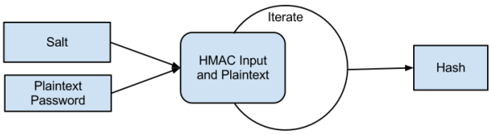

Надлежащие методы хэширования паролей
Просто хэшировать пароль недостаточно. Нужно делать это должным образом. Вот несколько методов и руководящих указаний.
Соль, касающаяся хэшей, метафорически схожа с пищевой солью. Вы также приправляете ей ваш хэш. Единственное отличие в том, что мы хотим нечто большего при использовании соли в хэше. Соли паролей – тип энтропии, которая делает различными хэши, вычисленные по одинаковому алгоритму от одинакового текста. Это делается путем хэширования соли совместно с открытым текстом. Одной соли недостаточно для обеспечения безопасности хэша, но с ней хэш лучше, чем без нее.
Соль также используется для увеличения временной сложности атак по словарю и радужным таблицам. Теперь атакующему нужно не только сгенерировать таблицы с потенциальными паролями, ему нужно сгенерировать их с разным значением соли. Вот почему важно, чтобы для каждого хэша использовалась уникальная соль (предпочтительно являющаяся случайным набором байтов): не только, чтобы гарантировать отсутствие коллизии пользовательских паролей, если они одинаковы, но и чтобы увеличить вычислительную сложность и размер атаки по словарю или перебором. Не повторяйте соль.
Довольно любопытно, что лучшие функции для хэширования паролей первоначально предназначались для генерации ключей шифрования из значений, не подходящих на роль ключа. Данные функции обрабатывают входные данные криптографическим образом и возвращают набор байтов, которые могут быть использованы, как ключ шифрования. Они также являются однонаправленными функциями шифрования, которые производят больше обработки данных, чем алгоритмы хэширования, и легко могут быть настроены для большей стойкости.
PBKDF2 (Password-Based Key Derivation Function 2 или Функция Получения Ключа На Основе Пароля 2) – это функция получения ключа, разработанная RSA Laboratories, используемая для получения стойких ключей на основе хэша. Она работает путем применения псевдослучайной хэш-функции (вроде SHA-256, SHA-512, и т. д.) к строке, в нашем случае – к паролю, вместе с солью и повторением этого процесса большое число раз. Данный процесс может быть обобщен следующей диаграммой:

Мы уже обсудили вопрос соли, однако, стоит отметить, что минимальная длина рекомендуемой соли для PBKDF – 128 бит. Спецификация PBKDF утверждает, что SHA-1 является утвержденной PRF (псевдослучайной функцией) для алгоритма. Однако, в 2005 году стало ясно, что SHA-1 – относительно слабая функция и не должна использоваться как HMAC. В ваших интересах использовать достаточно сильный HMAC, чтобы выдержать полный перебор, специальные атаки и потенциальные будущие проблемы дизайна (вроде взлома алгоритма или вычислительной достижимости). Важно отметить разницу между хэшем и HMAC – хэш не связан с аутентификацией сообщения. Он связан только с целостностью данных. HMAC обычно используется для подписи сообщений при хэшировании их с солью, уникальной для ее владельца. HMAC также можно использовать для генерации очень сильных хэшей. Проблема в том, что при известной соли HMAC столь же легко взломать полным перебором. Здесь на выручку приходит PBKDF2, реализующая итеративный HMAC, который увеличивает безопасность и время взлома каждого отдельного хэша.
Давайте взглянем на псевдокод этого процесса:
bytes PBKDF2(HashAlgo, Plaintext, Salt, Iterations)
{
bytes IterativeHash = hash_hmac(HashAlgo, Salt, Plaintext);
bytes TempHash = IterativeHash;
for(int iter = 0; iter < Iterations; iter++)
{
TempHash = hash_hmac(HashAlgo, TempHash, Plaintext);
IterativeHash ^= TempHash
}
return IterativeHash;
}
Это упрощенная версия полного псевдокода. Она также должным образом модифицирована, чтобы мы смогли оптимально использовать ее как функцию хэширования, а не как функцию получения ключа. Вот ее PHP-реализация:
function PBKDF2($plain, $salt, $iterations, $algo = 'sha256' )
{
$derivedkey = $b = hash_hmac($algo, $salt . pack('N', $block), $plain, true);
for ( $i = 0; $i < $iterations; $i++ )
{
$derivedkey ^= ($b = hash_hmac($algo, $b, $plain, true));
}
return $derivedkey;
}
Хоть вышеприведенные примеры и обобщены, они дают базовый взгляд на то, как может быть реализована функция PBKDF2. Здесь всего лишь хэшируется соль и открытый текст для получения первого хэша, затем в цикле тот же алгоритм используется для вычисления хэша от открытого текста и результата предыдущей итерации, после чего возвращается результат применения операции XOR ко всем вычисленным хэшам. Выполнив данную операцию 1000 или больше раз, вы сгенерируете сильный, стойкий ко взлому хэш, который вы можете безопасно использовать для хранения паролей. За подробностями можете обратиться к NIST-SP800-132.
Я (bwall) некоторое время обыгрывал в уме идею динамической энтропии. PBKDF2 кажется хорошей площадкой для ее внедрения. Данная идея заключается в том, чтобы сделать энтропию алгоритма шифрования изменяющейся в ходе шифрования. Она происходит из ограничений некоторых систем быстрого взлома хэшей, которые имеют тенденцию жестко оптимизировать определенные процессы вроде применения энтропии. Чтобы бороться с этим, мы можем добавить относительно быстрый процесс создания дополнительной энтропии, который потребует дополнительных вычислений в ходе взлома хэша и возможного удаления некоторых оптимизаций. В ARC4PBKDF2 поток шифра ARC4 инициализируется ключом, затем данный шифр используется для шифрования открытого текста перед его использованием в HMAC в каждой итерации, продолжая тот же поток и также шифруя результат HMAC. Этот поток ARC4 должен быть единым для всего процесса, чтобы добавить сложности и в без того трудный для взлома метод хэширования. Далее представлен пример реализации на C#.
public byte[] Hash(byte[] input)
{
ARC4 rc4 = new ARC4(ARC4Key);
byte[] derived = new HMACSHA256(Salt).ComputeHash(rc4.CryptBytes(input));
byte[] temp = derived;
for (int x = 0; x < Iterations; x++)
{
temp = rc4.CryptBytes(new HMACSHA256(temp).ComputeHash(rc4.CryptBytes(input)));
for (int y = 0; y < derived.Length; y++)
{
derived[y] ^= temp[y];
}
}
return derived;
}
Важно отметить, что в данной реализации ARC4 метод CryptBytes продолжает использовать один поток ARC4, так что каждое шифрование делается в разных частях потока. Динамическая энтропия – новая, экспериментальная идея, которую еще предстоит обсудить тем, кто разрабатывает методы оптимизации, на борьбу с которыми она направлена.
Bcrypt – адаптивная хэш-функция, появившаяся в 1999 году. Она немного походит на PBKDF2, но действует более сложным образом. Первую работу, связанную с данной функцией, опубликованную Наелсом Провосом и Дэвидом Мазьересом, можно найти здесь. Она очень подробно объясняет тонкости алгоритма и его реализацию. Для наших целей будет достаточно краткого обзора с примером.
По сути, bcrypt – это блочный шифр Blowfish, используемый в режиме ECB, с более сложным алгоримом подготовки ключей (особенно, что касается S-блоков). Это позволяет алгоритму быть стойким к возможным будущим атакам и существенно более адаптивным. Реализация алгоритма использует 128-битную соль и усовершенствованный алгоритм, известный, как eksblowfish или expensive key schedule blowfish. Заголовок функции bcrypt выглядит так:
bcrypt(cost, salt, pwd)
Здесь cost – контроллер подготовки ключей (задает ресурсоемкость фазы подготовки ключей), salt – 128-битное значение, а pwd – текстовый (до 56 байтов) ключ, используемый для шифрования по алгоритму Blowfish.
Существует пара действительно удивительных, полезных вещей, касающихся bcrypt и заслуживающих обсуждения. Одна из них – то, что алгоритму НЕОБХОДИМА соль. Хотя соль сама по себе не сохранит ваш украденный SQL-дамп, она увеличит его стойкость. Вторая – то, что алгоритм является (я использовал этот термин уже несколько раз) адаптивным. Время подготовки ключей может быть всего порядка одной миллисекунды или таким большим, как вы захотите. Замечательный факт состоит в том, что для сервера почти безразлично, что проверка пароля занимает 3 секунды вместо 0.3, но для атакующего такое увеличение сложности – абсолютный хаос. Это также позволяет напрямую бороться с экспоненциальным наращиванием вычислительных мощностей (известным, как закон Мура), поскольку со временем вы можете постепенно изменять значение переменной cost, чтобы увеличить сложность паролей.
Bcrypt – одна из наиболее популярных функций получения ключей (следущая по популярности за PBKDF2), и почти для каждого языка программирования доступна ее надежная реализация. Если вас заинтересовал продвинутый алгоритм подготовки ключей, рекомендуем вам прочесть официальный документ, упомянутый выше. Он выходит за рамки данной статьи, но для наших целей будет достаточно небольшого примера функции, реализующей базовые возможности.
public string bcrypt(int cost, byte[] salt, byte[] password)
{
byte[] state = EksBlowFishSetup(cost, salt, password);
string ciphertext = "OrpheanBeholderScryDoubt";
for (int i = 0; i < 64; ++i)
{
ciphertext = EncryptECB(state, ciphertext);
}
return cost.ToString() + BitConverter.ToString(salt) + ciphertext;
}
Вышеприведенный код довольно прост. Сначала значение переменной state устанавливается алгоритмом EksBlowFish – данная стадия является наиболее емкой по времени. Далее идет цикл получения шифртекста, изначально имеющего значение 192-битной магической строки (почти всегда равной "OrpheanBeholderScryDoubt"), путем многократного шифрования шифртекста из предыдущей итерации в режиме ECB вместе со значением переменной state. Итоговый результат – статическая 192-битная конкатенация стоимости, соли и результирующего шифртекста.